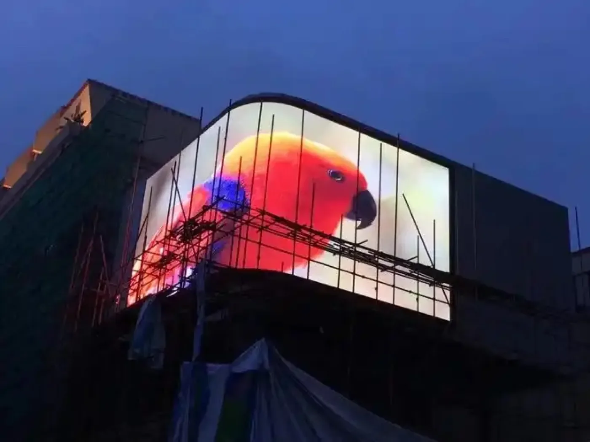

90-Degree Corner LED Cabinets for Lobbies and Retail Windows
What is a 90-degree corner LED cabinet? It is the cabinet, module or custom frame that lets two LED surfaces meet at a right angle — around a column, at the return of a lobby wall, or in a shop window that turns the corner of a facade — so the image reads as one surface rather than as two boxes that almost touch. The buying problem is not only pixel pitch. It is how the corner is built, how wide the seam is, whether the corner is sharp or radiused, and who is responsible for the join when the interior designer’s drawing meets the factory’s standard cabinet grid.
This guide is the corner companion to the lobby and window articles, not a second lobby or storefront buying guide. For pitch, brightness and the overall lobby brief, use the hotel lobby guide and the hospitality buying guide. For glass, glare and landlord rules at a shopfront, use the retail window screen guide. Entrance and daylight issues are covered in the lobby and entrance display guide. Those pages already flag that a corner has to be specified; this page is about how to specify it.
Why the Corner Is a Different Product Decision
A standard rectangular cabinet is designed to tile a plane. At a right-angle turn, that plane ends. If you simply stand two standard cabinets at 90 degrees, you get a dark gap, a double-thick corner, a break in the pixel grid, or a vertical stripe that guests notice even when they cannot name it. The content team also has to map pixels around the turn, so the processor layout and the content templates have to follow the same geometry as the hardware.
The corner is therefore a product and a drawing item, not a site improvisation. Agree it with the interior designer and the installer before the cabinet count is frozen, and require a mock-up of the actual corner detail — not only a flat sample module.
Four Ways a Corner Is Built
Most lobby and retail corners are built in one of four ways. Name the method in the RFQ, because the price, the lead time and the seam are different:
- A dedicated 90-degree corner cabinet or corner module. A purpose-made piece carries the image around a sharp internal or external corner. This is the cleanest look when the design wants a crisp arris. It is also the item that must be confirmed on the quotation, because it is not a standard tile.
- Two standard walls with a planned joint. The two faces stop short of the corner and the join is finished with a bead, a reveal, or a narrow unlit strip that the designer has accepted. This can be the right answer when the corner is a material change rather than a continuous image.
- A radiused or soft wrap. The image turns on a curve instead of a sharp 90-degree edge. Some facades and some rental cabinets are built this way. It is a different product from a sharp corner, and it must not be substituted silently in a tender that asked for a right angle.
- Right-angle splicing of standard cabinets. Some rental cabinets are designed to lock at a right angle without a separate corner part. That capability, where it is published, is a touring and event feature; it is not automatically the same part used in a finished hotel lobby.
Figure 1 shows an outdoor LED facade wrapping a building corner on a soft radius rather than a sharp 90-degree arris. The method has to be named in the specification, because a radius and a sharp corner are different products.

What the Product Pages Publish — and What They Do Not
On the published Asia Vision pages, a right-angle capability is stated for the rental COB Z series: a 500 × 500 mm cabinet that supports ±5° curve and right-angle splicing, so the same fleet can build a flat wall, a shallow curve or a corner without a second product line. That is a touring and event feature, at 1200 cd/m² and ≥7680 Hz, with P1.95 / P2.6 (optional virtual pixel P0.97 / P1.3). It is the right reference when the “corner” is a stage or a brand activation. It is not, by itself, a promise of a finished 90-degree lobby cabinet in a timber or stone reveal.
The indoor fixed series that usually start a lobby or window enquiry do not publish a dedicated 90-degree corner cabinet on their product pages:
- M-PRO — 16:9 die-cast aluminium cabinet, P1.25 / P1.56 / P1.87, SMD or GOB, common cathode, 800 cd/m², ≥3840 Hz. A natural starting grid when the content is 16:9, as in a meeting room or a lobby film loop.
- R-PRO — 640 × 480 mm cabinet, P1.25 to P2.5, SMD or GOB. Often the better starting grid when the opening is not a 16:9 rectangle, which is common in renovated lobbies and retail interiors.
- X Series — one cabinet family (500 × 500 mm, 250 mm and 1000 × 500 mm options) with COB, SMD or GOB modules and front service, useful where a mixed estate has to share spares.
- COB CV-PRO — indoor fine-pitch COB, P0.9375 / P1.25 / P1.5625 / P1.875, 800 cd/m², no-backshell design, front maintenance, specified for close viewing including exhibition and interior walls.
For those series, a 90-degree corner piece, a custom frame, or a planned mitre has to be requested and confirmed on the quotation. Do not assume that a standard cabinet can be cut or butted on site to make a sharp corner. GOB, where it is offered on M-PRO, R-PRO and the X Series, is the option to discuss when the corner is within reach of guests or sits in a shop window that can be knocked.
Lobbies, Columns and Retail Windows: The Detail That Shows
In a hotel lobby the usual corners are an L-shaped niche, a wrap around a column, or the meeting of the LED surface with stone, timber or metal joinery. The designer will care about the arris, the shadow gap, and whether the wall sits flush with the adjacent finish. Front service, which the indoor series above support in their published descriptions, is often the only practical way to service a corner that has no rear corridor.
In a retail window the corner is often an external one: the display turns the corner of the shopfront so it can be read from two streets. Daylight, glass reflections and heat in the window cavity remain the window-guide problems. The extra corner problems are the seam facing the pavement, the way water and dust sit in an external arris, and whether a sharp corner or a small radius is allowed by the facade drawing. An external 90-degree corner on a street is also a reach-and-impact position; say so in the enquiry if people can walk up to it.
Figure 2 shows an indoor LED wall that meets the adjacent room surfaces. The reveal, the edge finish and any corner join have to be drawn with the interior, not added after the cabinet count is fixed.

Specifying the Seam, the Reveal and the Mock-Up
A tender line that will survive a design review is specific about the geometry:
“The display shall turn the [internal / external] corner at [location] as a [sharp 90-degree corner / agreed radius]. The bidder shall submit a dimensioned corner detail showing cabinet or module type, pixel continuity, maximum seam width, and how the LED surface meets the adjacent finish. A factory or site mock-up of the corner, using the offered series and pitch, shall be approved before the remaining cabinets are released for production.”
Add the content path: how the processor maps the two faces, and who supplies the template. A corner that is physically neat can still show a content jump if the two walls are treated as separate canvases. Ask for a drawing that shows both the mechanical join and the pixel map.
Product pages publish a 3-year warranty and 18-day standard delivery. A dedicated corner cabinet, a custom frame or a mock-up cycle is not assumed to sit inside that 18-day figure; ask for the lead time on the quotation when the drawing includes a non-standard corner.
How to Request It From Asia Vision
Send the plan and elevations of the corner, whether it is internal or external, whether the design wants a sharp 90 degrees or a radius, the nearest viewing distance, and the adjacent finishes. For a finished lobby or window we will usually start from M-PRO, R-PRO, the X Series or COB CV-PRO and confirm on the quotation whether a dedicated corner piece, a custom frame or a planned joint is the right method; those series pages do not list a standard 90-degree cabinet. For an event or touring wrap, COB Z’s published right-angle splicing is the starting reference. Start the enquiry through the contact form.
FAQ
Sources
- Asia Vision product pages: COB Z, M-PRO, R-PRO, X Series, COB CV-PRO (specifications as published in November 2026).
- COB Z product page: 500 × 500 mm cabinet supports ±5° curve and right-angle splicing. Indoor fixed series pages do not list a dedicated 90-degree corner cabinet.
- Agree the corner detail with the interior designer or facade consultant and approve a mock-up before production.
Related Articles
- Which LED Display Should a Hotel Choose for Its Lobby?
- Hotel LED Displays Beyond the Lobby: Corridors, F&B, Ballrooms and Facades
- LED Display Retail Window Screen Buying Guide 2026
- dvLED for Lobbies and Entrances: Design and Specification
Planning a lobby or shop-window corner? Send the drawings, whether the corner is sharp or radiused, and the adjacent finishes, and we will confirm the cabinet method and lead time on the quotation. Start a project enquiry.